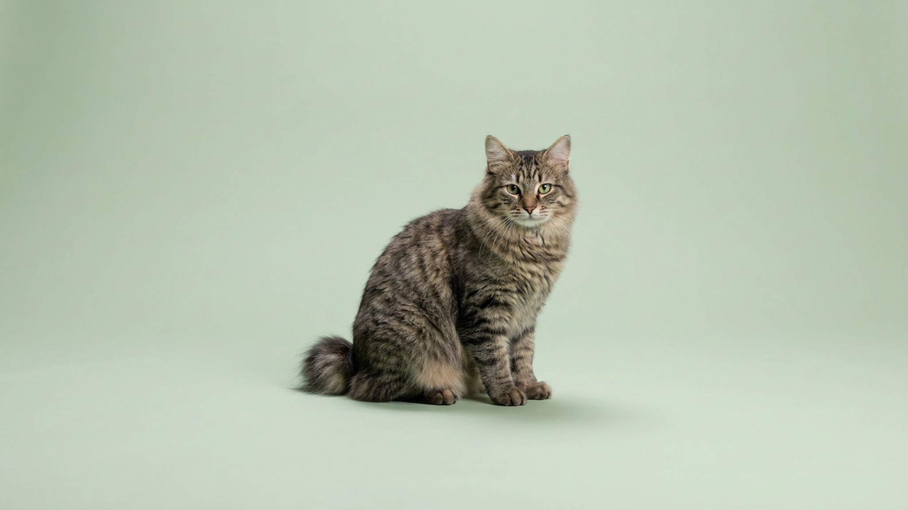

Большинство людей слышали о японском бобтейле или о куриле, но карельский бобтейл остаётся в тени — хотя это единственная порода кошек, выведенная на северо-западе России. Хвост у неё не просто короткий: каждый — уникальный, как отпечаток пальца, и складывается в плотный помпон. За этим симпатичным фактом — кошка с конкретным характером, которая подходит не всем, но тем, кому подходит, становится идеальным партнёром.
🐾 Ваш питомец — карельский бобтейл?
Заведите профиль в AnimaLife: приложение запомнит породу, возраст и вес и будет подсказывать по уходу именно для неё. Вопросы AI-ветеринару — круглосуточно и бесплатно.
Завести профиль → Завести в MAX →
У вас iPhone? AnimaLife есть в App Store
Порода сформировалась естественным путём на берегах Ладожского озера — отсюда другое название, ладожская кошка. Официальное признание получила в России в 1994 году. Главная особенность — хвост длиной от 3 до 8 сантиметров, который загибается, закручивается или собирается в помпон за счёт особого строения позвонков. При этом каждая кошка имеет уникальную конфигурацию хвоста: два карельских бобтейла с одинаковым хвостом — редкость.
От японского бобтейла карельский отличается более плотным телосложением, густой двухслойной шерстью и природным происхождением без участия селекционеров. Существуют короткошёрстная и длинношёрстная разновидности. Окрасов множество, исключены только цветовые точки (колорпойнт) и лиловый.
Это активная, любопытная и при этом уравновешенная кошка. Карельский бобтейл хорошо ладит с детьми — он игривый, но не суетливый, и не теряет терпение при шумных играх. С другими кошками и дружелюбными собаками уживается без проблем, если знакомство прошло постепенно.
Шерсть карельского бобтейла — самоочищающаяся: она почти не образует колтунов даже в длинношёрстном варианте. Вычёсывание раз в неделю поддерживает внешний вид; в период линьки (весна и осень) — чаще. Купание нужно редко.
По активности порода выше среднего: без игрушек и когтеточек кошка найдёт себе занятие сама — и не всегда там, где хочется хозяину. Интерактивные игрушки, охотничьи игры и периодические тренировки с палочкой закрывают потребность в движении. Стандартные процедуры ухода — чистка ушей, зубов и стрижка когтей — такие же, как у большинства пород. Сроки и периодичность уточните у ветеринара на первичном осмотре.
Порода хороша для семей с детьми, людей с другими кошками или собаками и тех, кто хочет активного, но не требовательного компаньона. Не подойдёт тем, кто ищет ленивого кота на диване или готов проводить с питомцем минимум времени.
При выборе котёнка обратите внимание на несколько моментов:
🐾 У вас карельский бобтейл?
AnimaLife соберёт уход под породу: к каким болезням есть склонность, что проверять по возрасту, чем кормить и когда пора к врачу. Бесплатно, прямо в мессенджере.
Собрать план ухода → Собрать в MAX →
У вас iPhone? AnimaLife есть в App Store
🐾 Понравился разбор?
Подпишитесь на канал — каждый день разбираем по одному тревожному симптому у кошек и собак: что в пределах нормы, а когда пора к врачу. Подпишитесь, чтобы не пропустить разбор, который может спасти здоровье вашего питомца.
Материал носит информационный характер и не заменяет очную консультацию ветеринара.